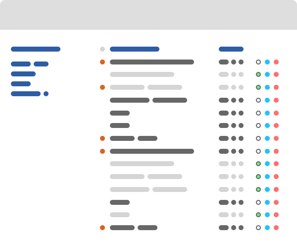

TO-DO Application
Organize important events and tasks with this simple web app.
Items can be filtered by group and sorted by urgency, name and due date.
Made with JavaScript.
シンプルなアプリで大切なイベントや用事を整理。
重要性や名前順、締め切り順での並び替えやグループ分けができる